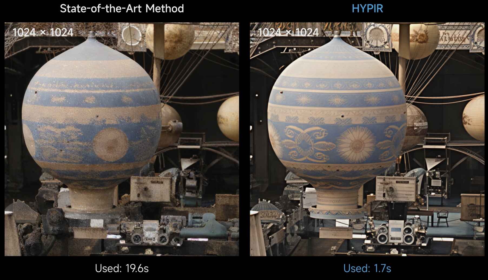

09/2026
Two papers are accepted by NeurIPS
The position paper Evaluation of Visual Processing Should Be Human-Centered, Not Metric-Centered (equal contribution) argues that visual-processing evaluation should follow human perception, rather than a single image-quality metric.
Harnessing Image Diffusion Prior for Photo-Realistic Video Restoration transfers image diffusion priors to photo-realistic video restoration.
02/2026
08/2025
We propose HYPIR: A Step Toward the Next Generation of Image Restoration
HYPIR introduces a simple yet powerful paradigm: fine-tuning a pre-trained diffusion model with adversarial (GAN) loss — no diffusion sampling, no extra adapters. This achieves an unprecedented balance of speed, fidelity, and quality. Initializing GAN training from a pre-trained diffusion model anchors the model near the natural image manifold, ensuring stable training, faster convergence, and superior results — all in a single forward pass.
Official Webpage: The high-speed, high-performance image restoration model is now available on 明犀AI and SupPixel AI.
